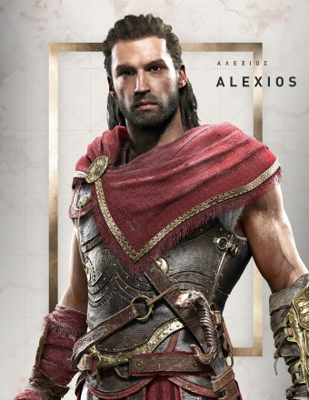

出生于公元前458-431年期间的斯巴达，阿利克西欧斯的姐姐。(若选择男主角，卡珊德拉为妹妹，背景和出生日期套用德莫斯)卡珊德拉自小便接受养父尼科拉欧斯和生母密里涅严格的斯巴达教育。 以伊述神器列奥尼达之矛为武器，是闻名于希腊世界的英雄和佣兵，有驯鹰人之称。
出生于公元前448年，是斯巴达国王列奥尼达斯的孙子，流亡佣兵卡珊德拉的弟弟。（游戏中选择他作主角则为哥哥，生日和背景套用驯鹰人。）
时间回溯到公元前432年，故事从凯法隆尼亚的小岛上展开，主角是岛上小有名气的驯鹰人雇佣兵，他的朋友马库斯为了兴办葡萄园从绰号“独眼人”的地头蛇借了一大笔钱，主角帮助马库斯还清债务，为此踏上了讨债的道路，也因此卷入了伯罗奔尼撒战争的纷争，探寻过往的身世谜团。